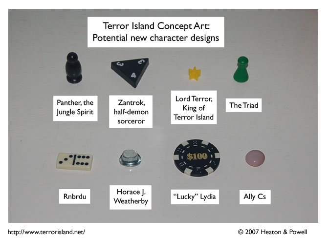

Strip #194
— Filler Art Friday, 2007
If you can figure out some way to count this as canon, go for it.
Notes, Thoughts, &c.
Ben’s Notes
Don’t worry, we’ll bring you the thrilling conclusion of the exciting Green Grocer whatever on Monday. I just didn’t want to wait any longer on showing off these possible characters. Some of them might eventually appear in the strip again!
Lewis’s Notes
Filler art is supposed to be a quick fix for lack of content, but I think Ben and I spent just as much time on this as on a regular strip (composing a detailed backstory and character sketch for each of these 8 potentials). You the fans can even decide which character you want to see in future strips. Feel free to vote in the forums.